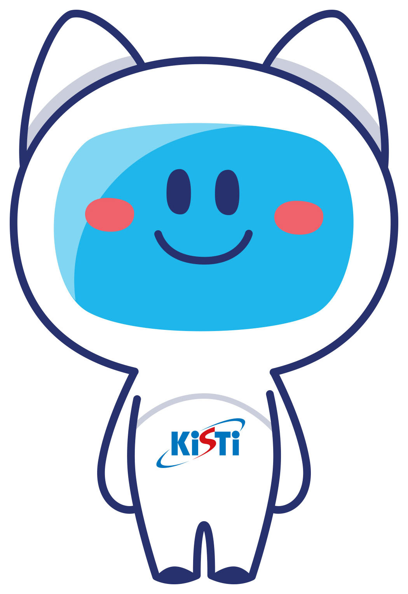

We build large-scale AI models and infrastructure for science and technology — including KONI (KISTI Open Neural Intelligence), Korea's science-specialized large language models — to accelerate the vision of AI for Science.
The Large-scale AI Research Center is part of the Division of AI and Data at the Korea Institute of Science and Technology Information (KISTI), a government-funded research institute that operates Korea's national supercomputing infrastructure and manages the nation's science and technology information resources.
Our center develops and openly shares Korean-and-English large language models, scientific datasets, and LLM-based technologies specialized for the science and technology domain. By combining KISTI's national-scale computing resources with its vast S&T knowledge base, we help researchers and developers build AI applications that understand, analyze, and generate scientific knowledge.
Code from across the center — model training, evaluation, and tooling, not just KONI — is shared openly on our GitHub organization.

From accelerating scientific discovery to autonomous AI Co-Scientist systems and science-specialized large language models — our research applies large-scale AI to real scientific problems.
LLM-based technologies for scientific discovery — literature understanding, knowledge extraction, question answering, and research assistance built on KISTI's national science and technology information resources.
Development of an autonomous AI Co-Scientist system that supports the entire research workflow, improving the efficiency and productivity of the science and technology research process.
Development of KONI, science-and-technology-specialized LLMs excelling in both Korean and English, through continual pretraining, supervised fine-tuning, and preference optimization. Models are released openly on Hugging Face.
Extensions built around KONI for different stages of the model lifecycle — more are on the way.
KONI is a family of open large language models specialized for science and technology. All released models and datasets are available from the KISTI-KONI organization on Hugging Face.